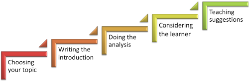

Delta: writing your first Delta essay

This is a step-by-step guide to writing your first Delta essay. It will take through the process this way:

In what follows, you will be advised to look at some other guides on this site. All the links come at the end in the order in which they appear in the text.
 |
Choosing your topic |
The choices and their implications
Remember that you have to do 4 assignments in all:
- Two assignments focus on language systems. They must be different areas. You can choose from:
- Grammar (i.e., a structure or set of allied structures)
Lexis (with the focus on systems, not reading etc.)
Phonology (with the focus on systems, not speaking skills)
Discourse (again with the focus on systems, not on reading, speaking or writing) - Two assignments focus on language skills. There must be one of each sort and you can choose from:
- Receptive skills: reading or listening
Productive skills: writing or speaking
Some centres will insist that you do one or the other for your first Language Skills / Systems Assignment (hereinafter, LSA). Usually the choice is systems. Other centres will give you a freer hand.
There are implications because your choice of what to cover in LSA 1 will affect what you can do later.
- If you feel happy writing about and teaching lexis, for example, and you choose to do that for your first assignment, it means that you can't use that area for the externally assessed assignment (usually the last of the four).
- In the same way, if you focus on a receptive skill for one of your assignments, the second skills assignment will have to be on speaking or writing.
- If you do two systems assignments during your course, the externally assessed assignment must be on skills and, of course, vice versa.
It is important that you think about your choice for the topic of each assignment carefully.
 |
Choosing |
In most centres, you will do an unassessed diagnostic lesson
before you get to LSA 1. That is Stage 1 of Part A of the
Professional Development Assignment.
There is no reason at all for you not to use the same topic for any
of the assessed assignments.
You may already have something firmly in mind for your first assignment. If you don't and are staring at a blank word-processing screen, the place to go now is the in-service training index. There you will find guides to different facets of the systems of English. Choose one, work through the guide, and you have made a good start. There are also less technical guides in the initial plus index that you may want to follow, especially if you are choosing a less familiar area.
OK. Now you have a topic, you need to review the advice in the guide to writing a Delta Background Essay before going on to specifics concerning each section.
There is more information in the short guide to choosing your topic for an assignment.
The title |
The title is the first important decision to make.
 |
 |
Mini-task:
Why should the title of the assignment be so important? Click here when you have made a note of something. |
- Because it tells the reader precisely what to expect.
- Because it provides a permanent reminder to you to keep focused and on track, avoiding digression and irrelevance.
Most people are happier dealing with something non-slippery for the first assignment, so we are going with systems here as our example. In particular, from here on, the example will be based around this title:
Helping learners at B1 level understand and use modality for obligation and lack of obligation.
We have done four things here:
- We have made it clear that we are focused on systems (structures for expressing obligation or its lack)
- We have limited ourselves by level (B1)
- We have said that we will focus on both understanding and using the structures
- We have implied that we won't only be looking at modal auxiliary verbs
The title alone has already got us well on the road to meeting criteria 2a and 2b for the Delta Background Essay. (Now might be a good time to download the guide to the Background Essay criteria, linked below and here. It is a PDF document that will open in a new tab.)
Now we have the cover page and footer for our assignment:

and that makes us feel better already.
The introduction |
This is the part where we meet criteria 2a, 2b and 2c at Distinction level.
We need to say:
- What we are doing
For example, we might begin with:- This essay will focus on helping
B1-level learners use and understand deontic modality (i.e., for expressing
obligation or its lack) in English. Explicitly, the essay
will cover the use of common modal auxiliary verbs: have to, must,
ought to and should as well as the use of modal
adverbs and adjectives appropriate to the level.
Because the focus is on B1-level learners, the essay will not look at unusual forms of modal expression for obligation such as Don't you dare do that! and the subtleties of past modal use (e.g., didn't have to vs. needn't have) are also beyond the scope.
- This essay will focus on helping
B1-level learners use and understand deontic modality (i.e., for expressing
obligation or its lack) in English. Explicitly, the essay
will cover the use of common modal auxiliary verbs: have to, must,
ought to and should as well as the use of modal
adverbs and adjectives appropriate to the level.
- Why we are doing it
Here, you need to describe your own experience and make reference to what you have read and researched. For example:- In my experience, learners at this level often have difficulty with English modal expressions in general and are often particularly confused by the fact that English uses a range of modal expressions to signal obligation or its lack (e.g., the distinctions between must, have to, mustn't and don't have to).
- It is clear from my research that many
languages (Korean, Greek etc.) have a much more limited range of
modal auxiliary verbs under which the shades of meaning in English are
subsumed (Swan and Smith, 2001, passim). It has
also been asserted that
Modal auxiliary verbs are, however, very variable across languages.
(eltconcourse.com, emphasis in the original).
- Why it is important
Here, you just have to say what value to learners your chosen topic is.
For example:- Expressing obligation or its lack is a
key communicative need for many learners, either when referring
to personal motivation or that of people around them.
Understanding distinctions between strong advice, obligation and
legal, moral or logical compulsion is also important for
learners who may come into contact with native or very competent
speakers of English in virtually all settings and registers.
On the other hand, the inability to handle the language and the concepts it encodes may result in learners sounding too demanding, too timorous or too permissive.
Examples of the kinds of errors they may make are in the analysis and discussion of the issues for learners in this essay.
- Expressing obligation or its lack is a
key communicative need for many learners, either when referring
to personal motivation or that of people around them.
Understanding distinctions between strong advice, obligation and
legal, moral or logical compulsion is also important for
learners who may come into contact with native or very competent
speakers of English in virtually all settings and registers.
Notice that we have
- set out our stall clearly (and avoided accusations of leaving certain important things out)
- drawn on personal experience
- drawn on research
- said why being able to handle the structures is important for learners in general, not just our learners
It's looking like a distinction, already.
 |
The analysis |
You will be unsurprised that this section will not tell you
exactly what
to write.
The analysis is contained in the guides on this site so if this is
an area you want to address, you should start with the index to
modality in the in-service section.
You'll need to research a bit and focus on expressions such as
It's (very) important to ..., It's (absolutely) vital to ..., It's
not (at all) necessary to ..., It's important not to ... / to avoid
+ -ing etc.)
The first thing to be sure of doing (note that modal adjective, by the way) is to define your key terms.
In this case they are modality and
obligation.
The first signals the speaker's perception of events or states.
The second can be roughly paraphrased as
I state that it is
necessary to do something, not necessary to do something or
necessary not to do something.
Now you have to get on and do the analysis:
- Form: the positive, negative and interrogative forms of the selected modal auxiliary verbs and modal adjectives and adverbs used for obligation.
- Meaning: how meaning is expressed using the forms
- Use: considerations of style, register and hedging etc.
- Pronunciation: especially common contractions and stress on adjectives and adverbs
Here's an example of parts of an analysis, lifted partially from the guide on this site which is something you can do providing you credit it:
|
The modal
auxiliary verb must has no
future or past forms for obligation although it does epistemically in the sense of
deduction where the perfect form is used, e.g.: The intrinsic meaning of must does not admit the
concept of remoteness. This being so, no form exists to
express the concept in English. That seems arguable on two grounds.
When an adjective implying obligation
is used with an intensifying adverb, it is common for either or both to
be stressed as in, e.g., Another issue for learners at B1 level is
that of gradability in adjectives. |
Some of the above focuses on issues for learners to do with their
first language(s). That is important but you should also
consider issues of style and register and much else.
For more on the levels of depth, detail and precision which are
required for a systems-focused essay at this level of analysis, see
the separate guide to analysing systems for a Background Essay.
For more on the levels of depth, detail and precision which are
required for a skills-focused essay at this level of analysis, see
the separate guide.
 |
Reference materials |
Note how, in the example above, it is quite clear from where the
information comes. You are not expected to start language
analysis (or much else) from scratch.
It is also clear, however, that the writer is doing some critical
thinking because a serious comment is made on the opinions of
authority (Lewis). If you are looking for a Distinction, you
must read and write critically and not simply insert citation to
prove you have read a book.
This site is, naturally, a very good place to start your research
but you may like to go to
the guide
to reference materials for other ideas.
At Delta level, you need to look beyond grammars designed for
learners, excellent though some of them are. You need to look
at reference grammars for a fuller picture and then select the parts
of the analysis you present bearing your chosen level, focus or type
of learners in mind.
 |
Issues for learning and teaching |
You might combine this with the analysis (as in the example
above). That's sometimes a good way to make sure that the
issues you identify are closely tied to your analysis and you are
not suddenly introducing a problem with a form or meaning you have
not analysed.
You'll find information on this part in the guide to teaching modal
auxiliary verbs
(linked below) but you must also draw extensively on your own
experience.
You need to mention issues for learners and teachers with:
- form
- meaning
- use
- pronunciation
but you absolutely must (modal with an intensifying adverb, by the way) keep your eye firmly fixed on the level of the learners (in this case, B1). Being able to pronounce have is not a problem but being able consistently to use the schwa for to, is a problem, for example.
Examples of the identification of issues for learners are given
above in the integration of issues with the analysis.
You need to remember to include issues for teachers as well as
learners so a look through
the guide to
teacher-induced error may be useful.
You should follow up the identification of issues with an
example of what happens when learners make errors. You
promised to do that in the introduction (see above).
 |
Suggestions for teaching |
Tie these closely to your analysis and identification of issues.
For example, if you have identified that the negative of must
comes in two forms (mustn't and don't have to) and
that this is a real problem for, e.g., speakers of German and many
other languages, then you need to tackle ways to present, practise
and reinforce the concepts.
Do not introduce here teaching suggestions or materials which have no relationship to your analysis and identification of issues. That will mean you fail under criteria 2d, 2e and 4c and you do not want to do that.
Make sure you:
- State what issue you are targeting and refer to where you analysed it
- Describe the procedure and or the materials well enough for the reader to understand (don't just bung them in the appendix and make the reader do the work)
- Evaluate the idea stating positive and negative points
You need to outline and evaluate four or five ideas but make sure they attack different targets and are of different kinds (e.g., presentation, practice, consolidation, revision etc.).
For example:
I have successfully introduced and presented
the role of intensifying adverbs with adjectives of obligation using
the dialogue in Appendix 4.
After introducing the characters, their roles and the situation I
have played the tape once for general gist understanding. Then I
have played it again asking the learners to write down only the
words emphasised by the speakers (absolutely vital, very
important etc.).
Together, the learners figure out inductively from the examples they
now have which of the adjectives are gradable (modifiable with
very) and which require intensifying adverbs such as
absolutely, wholly, totally etc.).
At this stage, the learners discuss in pairs why the speakers choose
to use emphasisers and how they are feeling. I usually give
them a worksheet for this stage so that we can check the answers
together at the end. It is very important that they grasp the
use and meaning here.
Then the class can go on to practise the forms by ...
A logical extension is to apply the intensifiers to the modal
auxiliary verbs
themselves to make statements stronger as in, e.g.,
I absolutely
have to go before six
I really must get on with some work
etc.
because here, too, as was noted in Section 3 of the analysis, the
modifier is not stressed but the modal is and weak forms (see
analysis of phonology) are not deployed.
I have noted, however, that these procedures can sometimes lead to
learners overusing intensifiers unless the attitude of the speaker
is made very clear from the outset.
Note that the writer draws extensively on personal, practical
classroom experience. It is very important to
do that.
Note, too, that the writer has suggested a potential drawback and
said how it may be overcome.
 |
Help! I'm running out of words |
Do not panic.
If you find that you have bitten off more than you can chew in 2500 words you have two choices:
- Go back to the title and introduction and re-write both to leave out some areas and further narrow your focus. Then remove from the rest of the essay any mention of the areas and expand what you do say in the remaining ones.
- Re-read everything you have written and cut anything that is not centrally relevant to the title and scope. Do not remove examples because they are important but you don't need three examples of everything.
You may be able to combine those approaches.
 |
Do I need a conclusion? |
For obscure reasons, some centres insist that you have one.
If you do, keep it short and use it to sum up rather than repeat
what you have said. You do not have words to waste on it.
Start with In summary because that will keep you on track.
An example might be:
In summary, as my analysis has shown, this is an area replete with problems for students and subtleties of meaning, form and pronunciation which needs handling with care. The central teaching issue is to make the context and the attitudes of speakers clear in any presentation (see the analysis of meaning) and to provide contextualised and personalised practice (see, especially, suggestions 2 and 4 in this respect).
Finally, you may like to go to the guide on getting a Distinction grade for a Delta essay.
| Guides linked from the text above | |
| the in-service guides | this index is linked to all the guides at the appropriate level on this site |
| the initial-plus guides | this will take you to the menu of simpler, less detailed guides |
| writing a Delta Background Essay | this is the general guide to how to approach the task of writing Delta Background Essays |
| choosing a topic | this is a guide devoted to how to choose a topic for your assignment |
| the assessment criteria explained | for a break-down of the criteria and what they mean (new tab) |
| in-service modality index | for links to guides in the example area |
| analysing systems | for a guide to how to analyse systems in a Background Essay |
| analysing skills | for a guide to how to analyse skills in a Background Essay |
| grammar reference materials | for a list of grammar references you may like to consider using |
| skills reference materials | for a list of skills references you may like to consider using |
| teacher-induced error | this may be useful to you for identifying teaching as well as learning issues |
| getting a Distinction | if you want to make sure you meet all the criteria above pass level (at least) |
| Other guides which may help in the process of writing a good Delta Background Essay | |
| a style guide | for a guide to writing in appropriate, formal, academic English for Delta |
| study skills for Delta | this is a guide to the skills you need to deploy when writing for Delta |
| researching language online | a short guide to whom to trust |
| hedging in EAP | for how to use modality and other academic hedging tactics |
| reporting verbs in EAP | for how to use a range of reporting conventions |
| types of languages | for a guide to what to look for in other languages |